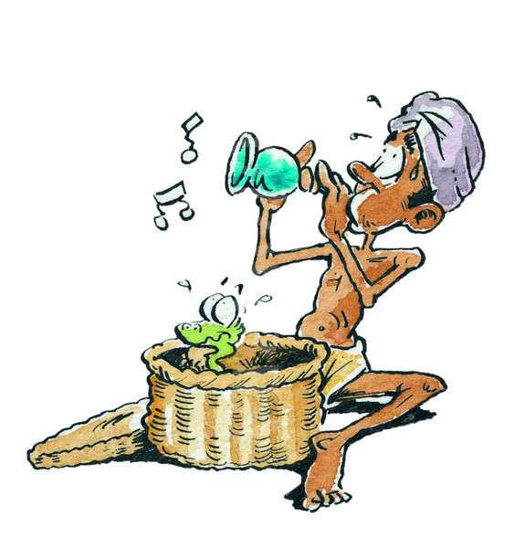

Sanke Charmer
A snake charmer is a common sight to Indian villages. Now-a-days we do not come across a snake charmer so often in Delhi. I had an opportunity to see a snake charmerand his snakes a monthago. The snake charmer was clad in dirty Kurta and Pyjama. He had a covered basket in one hand a BEEN (flute) in another. He was wearing a worn out chappal and had a red scarf round his neck. The charmer was a middle-aged man. He had a short beard he promised to show us a snake dancing, if each one of us, the spectators, paid him a rupee. A few agreed, others left. The snake charmer sat on the ground, took his BEEN and started playing on it. He lifted the cover of the basket. A big fat snake came out of it slowly, faced the snake charmer and started swaying its head; had read about it, seen in a movie, but had never believed it to be true. It was a great experience for me.